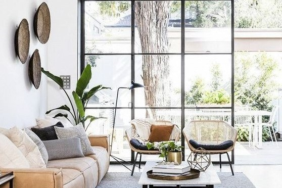

ELEMENTELE DESIGNULUI INTERIOR
Spațiile configurate bine, ne fac să ne simțim în largul nostru, să ne integrăm rapid în decor fără să resimțim o disonanță între starea interioară și ambient. O casă primitoare este o casă unitară, în care este folosit un singur stil, sau cel mult 2 îmbinate perfect. Aglomerarea decorațiunilor, contrastele prea puternice, pot crea oboseală și pot să afecteze starea de spirit, dar și forța și puterea de lucru a celor care locuiesc acolo.
1. Spatiul
Spațiul este centrul, pornind de la acesta se conturează toate celelalte piese ale planului. Iar aici nu este vorba numai despre dimensiune, ci și
despre utilități și forma acestuia. Un spațiu care are elemente de decor/mobilă, se numește spațiu pozitiv, iar cel gol este considerat negativ.
pentru ambient plăcut, este necesară echilibrarea acestor 2 zone, formându-se fie un tipar după care se vor structura ariile cu mobilă, fie o
concentrare în margini sau pe mijloc a elementelor pentru a oferi senzația de simetrie.
2. Liniile
Liniile dau naștere formelor și sunt responsabile de crearea și menținerea: armoniei, contrastului și unității. Ele definesc formele și reprezintă ghiduri vizuale pentru spațiul interior. Sunt catalogate astfel: orizontale, verticale și dinamice.
În timp ce liniile orizontale definesc structuri precum mese, scaune, paturi, cele verticale se regăsesc în: geamuri, uși, dulapuri sau servante nefixate în pereți. Dinamicele sau liniile curbe sunt orientate către acțiune, oferă un aer dramatic și jucăuș și se pot utiliza pentru structuri precum scări.

3. Lumina
Este un element dintre cele foarte evidente în ceea ce privește designul interior. Naturală sau artificială, fără ea, culorile, texturile, tiparele nu au nicio semnificație. Lumina setează starea de spirit și ambianța într-un spațiu de locuit și subliniază toate celelalte elemente ale contextului, inclusiv formele și liniile. Amplasarea bună a ușilor și a geamurilor ar trebui să se ocupe de lumina naturală.